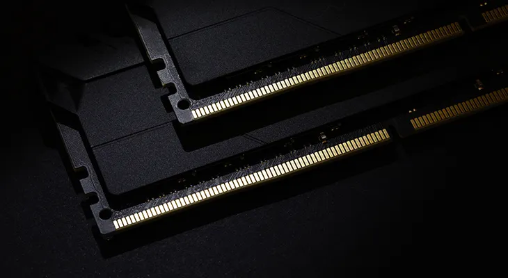

Une barrette de RAM, sert de mémoire à court terme. Elle permet à l’ordinateur de travailler rapidement en gardant en mémoire ce que tu es en train d’utiliser, comme une application, un jeu ou une page internet. Plus il y a de RAM, plus l’ordinateur peut faire plusieurs choses en même temps sans ralentir. Quand on éteint l’ordinateur, tout ce qu’il y a dans la RAM disparaît : elle ne sert que pendant l’utilisation.
C’est grâce à elle que tu peux ouvrir un jeu, Discord, un navigateur, et 15 onglets YouTube sans que tout explose.